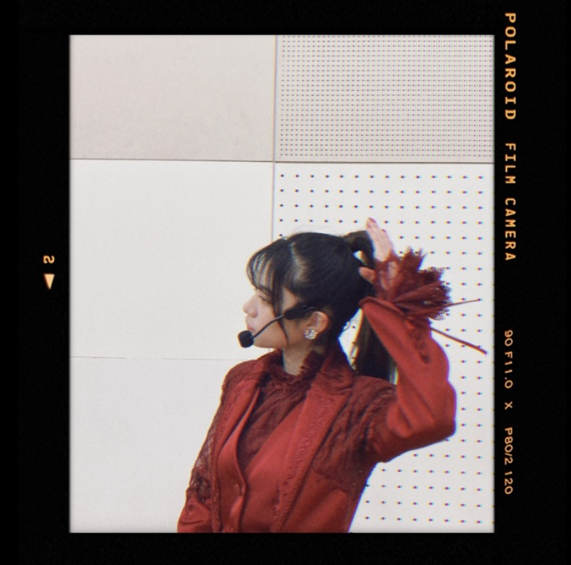

2021/0111Monくろまめ
今年も宜しくお願い致します。
そして、新成人の皆様ご成人おめでとうございます。
どんな形であれ
この日を迎えられた事に感謝して
是非、ご家族や大切なお友達に感謝を
伝えられる日にしてください。
そして、乃木坂三昧
ありがとうございました。✨
乃木坂の歴史を振り返る事が多く
自分が出演していない時間に幼い頃の自分の
エピソードや想い出を後輩達やファンの方が語ってくれてるのを聞いて嬉しい様な恥ずかしい様な気持ちになりました。
でも、それだけの事をやってきたんだと実感でき
そこに喜びを感じられたら
それだけ幼いから乃木坂46というグループとともに成長、歩んできたんだなーと感じられました。✨
今年も是非一緒に歩んでくれると嬉しいです。
写真は私が二十歳の時の
雑誌の撮影での振袖です。


赤色と黒と白が好きな色です。✨
2021/01/11 20:45


コメント(344)
最高でした！
成人式できることが出来ました！！
蘭世の振袖可愛すぎる！！
もーミーグリ始まるの楽しみ！！！
まってぃん（りょうた）より！
良い年になりますように
ブログ更新ありがとう！
大好き⸜❤︎⸝
赤の衣装すっごく似合っててかっこいいです！
今年もたくさん応援させてください！
今年もよろしくです
東京は今更に厳しい時期だと思いますが、元気なら何よりです
自分も山口からですがいつも応援しています
また会える日まで！
乃木坂三昧では蘭世の素敵なエピソードがたくさん出てきてましたね。ほんとにかっこいいと思います。
嫌なことも沢山ありますが、みんなのおかげでちょっと頑張ってみようと思えます。いつもほんとにありがとう。
長丁場お疲れ様でした。
自分は来年成人になります。自分の地域では先輩方は延期という形になってしまっていました。来年こそはちゃんとした式を挙げられればなと思っております。両親に感謝しかないですここまで育ててもらって。
私事ですが僕も成人しました。
これからは大人の自覚をもって蘭世さんを応援していきたいと思います。
色んなお話聞けて楽しかったです。
乃木坂三昧長時間お疲れさま最高の番組ありがとう！もちろん蘭世の信じた道に信じてついていくし強い信念を持ってるからこそかっこいい言葉とか行動に出るしそこがなかなか出来ないしすごいことなんだと思うな
ブログ更新ありがとう！
今日はほんと久々の休みだったから
最初から最後まで
乃木坂三昧を聴く事が出来て
乃木坂三昧な1日になりました(^^)
らんぜの登場機会が
たくさんあって嬉しかったよ(^^)
それしにしても
3rdバスラでの正規メンバー昇格
アンダラ武道館での炎のスピーチ
乃木坂46寺田蘭世としての
歴史の1ページになってる
この2つのライブ音源を聴けたのは
ほんと最高だったし
当時の思い出が蘇り
涙が出てきました。
その他でも
みんなの話を聞いてて
たくさんのシーンが蘇ってきました(^^)
改めて
乃木坂の事が大好きだ！と思わせてくれる
素敵な1日になりました(^^)
蘭世はやっぱ赤のイメージ！
蘭世本当に美人だし可愛い！
乃木坂三昧懐かしい話たくさん笑
蘭世推しとしては凄く楽しかったです！
今年も蘭世ちゃんの更なる活躍を楽しみにしています。
特にファッションは私が苦手な分野なのですごく参考になります。
乃木坂三昧お疲れ様でした。面白かったし、楽しかったです！！！
2021年も乃木坂を応援し続けます！
また更新待ってます！
この間のアンダラでもクリスマスの赤い衣装がすごく素敵でした♡
ブログでのモノクロの写真を見る限り白と黒も蘭世ちゃんの顔立ちに映える色だと感じます！
好きな色を身につけている蘭世ちゃんはさらに魅力的で大好きです。
体調に気をつけてね！これからも応援してます♪
ユンです(^^)
今日も楽しめましたか？
ぼくは楽しかったです！
今日はすごく久々にお出掛けをしました！
ばあちゃんが結構遠いところまで用事があっていかないといけない状況だったけど
先週降った雪で歩くのも危なかったから心配になって
一緒に行くことにしたのよ！
だから今日はちょっと遠出してきたー
美味しいものも食べれた！
でも疲れたから今日は早めに寝ようと思う、、、
明日また家庭教師の仕事もあるからね
色々頑張るぞー
そして今日の乃木坂三妹、本当にお疲れさま！
懐かしい曲もたくさん流れてきて
あ、これ最近聴かなかったけどまた聴こうと思う曲がたくさんあった！
さゆりんご軍団も曲もいつも楽しくていい曲ばかりで
なぜかギターもすごいし(笑)
らんぜちゃんの可愛い写真も見れたし！
お出掛け中にちょこちょこ聴いたけどすごく楽しかったです！
本当にありがとうー！
そして振袖の写真も素敵です！
やっぱ似合うよー
そしてミーグリも月末にありますね！
またよろしくです(^^)
では、今日はこの辺で。
またー！！
ユン
これからも一生変わらず、蘭世ちゃん自身と、グループの活躍を願ってます。
今年も蘭世と一緒に歩ませていただきます！
ラジオ聴いてたよ。
蘭ちゃんは気品のある美人で自分の芯もしっかり持っているのに、自分のことを謙遜しすぎだね。
そんな蘭世丸も好きだけどね。
今日のラジオ聞いてて、蘭世さんの話題がたくさん上がっててとっても嬉しくなったよーー！
蘭世さんの過去のスピーチとかも聞いて、蘭世さんのことが好きだ！って改めて感じることができました！
今年新成人なのですが、成人式が中止になってしまいました…
けど、今日のラジオでめちゃめちゃ元気をもらいましたよ！ありがとう！2021年もよろしくお願いします！
今年新成人です！成人式はなかったけど、蘭世さんにおめでとうって言ってもらえて嬉しいです！
今年も良い年になりますように！
またかくね！
選抜入りが待ち遠しいです！
ライブが出来ない今だからこそメンバーの思い出の曲だったりを聴けて嬉しいです！！
やっぱり自分は選抜曲も好きだけどアンダー曲と2期生曲好きです！！
自分も赤色好きですよーー！！(あと、紫も笑)
コロナに負けずお互い頑張りましょ！！
そしてブログ更新ありがとう！
こんな状況だけれど、
年が明けて時間がどんどん進んでいるなと最近感じます
個人的にも今年は春から社会人なので、この年末年始はいつもより家族と過ごす時間を多めにしています
改めて家族のおかげでここまできたんだなと思うし、
生活を振り返ればそこには乃木坂46だったり蘭世がいて支えになっていることを深く感じますね
寺田蘭世さん
今年もよろしくお願い致します！！
乃木坂三昧聴いてましたよ！
蘭世関連のエピソードが多くて、
僕ら蘭世推しはずっと盛り上がっていました！！笑笑
色んなところで蘭世の名前が出て讃えられるのは
それだけ蘭世がたくさんの人の目に留まる活動をいっぱいしてきて、それがその人々の心を動かすような素晴らしい活動ばかりだったからだと思います
僕自身、蘭世の活動考え方に心を動かされて、今蘭世推しとして生きています
今年も蘭世を応援するし、
一緒に笑顔で過ごしていきたいと思っています
いっぱい笑って笑顔満開の花をたくさん咲かせる年にしたいです
僕も蘭世の笑顔を咲かせるためにいっぱい努力しますね！！
改めまして、
今年もよろしくお願い致します！！
体調にはお互い気を付けていきましょう！
人として大好きです
今日は成人の日だね！自分はもう10年以上前の事です(笑)
そして、乃木坂三昧お疲れさま(*´ω｀*)
空いた時間に聞かせてもらったよ♪
アナスターシャ聞けた( ≧∀≦)ノ
もう少しはこの状況が続くかと思うけど
お互い頑張りましょうね！ 明くるい未来を求めて♪
あっ！！言い忘れてた！ 今年もよろしくお願いします✨
新成人の皆さんはおめでとうですね！
成人式と言うのは人生において一つの大きなイベントですよね。
今年はそれがなかなか出来なくなってしまいましたが、それぞれの形で感謝を表現してくれると嬉しいですね。
そしてお疲れ様でした！
メンバーやファンの方々は蘭世さんのことを非常によく見てますよ笑
それだけ皆さん応援してくれているのではないでしょうか。
そして蘭世さんと一緒に歩んできたこれまでの日々ですよ。
これからも誰にも負けないぐらい応援しているのは変わりません！
蘭世さんも変わらずに！
振袖姿…美しい…
赤や黒といった強い色が似合うのも蘭世さんらしいですね！
します。
乃木坂三昧、お疲れさまでした。久しぶ
りにアンダーライブでの、らんぜちゃん
のスピーチを聞けて、年頭に身の引き締
まる思いです。
そう、活動していると、常に今、次と先
のことばかり考えちゃうけど、こうやっ
振り返えられると、自分のしてきた事を
実感できる。
らんぜちゃんの振袖姿、ありがとう。
蘭世、こんばんは！
そして、新年、明けましておめでとうございます。
今年もどうぞ宜しくお願いします。
乃木坂三昧、拝聴しました。とても楽しく、乃木坂46を巡る音楽や愛、歴史を強く感じる時間でした。楽しかった！
本当にね！途中、蘭世三昧だったもん。久保さんや向井さん、林さん、矢久保さんをはじめ、蘭世が乃木坂46として歩んできた軌跡が、後輩メンバーの人生に影響を与えたり、未だに心を掴んでいるなんて、本当に素敵なことだよね。正真正銘、蘭世はインフルエンサーなのだと思います。カリスマと言うのかな。
蘭世があの日紡ぎ出した言葉は、あの日までの蘭世の体験から得た感情を探して言葉にしたのだと思います。今の蘭世は、あの日よりずっと多くの経験を積み重ねてきました。あの日よりずっと優しくて温かくて、みんなと分け合えるような熱に進化したよね。あの日の蘭世の素敵さから、今の蘭世をちゃんと見ていたいと僕は思うのです。そして、今も挑戦を恐れず、人への感謝を忘れず、考え続け、努力し続ける蘭世のことを、僕は愛しています。
これからも一緒に歩いて行こうね。
それが僕の幸せです。
蘭世のアイドル人生は、まさしく、多くの「人」の道に影響を与える「生」き方なんだろうなと思っています。素敵なアイドルに、乃木坂46という場所で出逢えたことを心から嬉しく思います。
いつもありがとう。
とても前のように感じるね、成人式。
僕は蘭世と同い年だから、自分の人生を蘭世に重ねることも多いんだ。あの頃からたくさんの成長を遂げてきた蘭世に比べたら、僕は多分、停滞してしまうことの方が多かった。悔しさ、無力さを感じることもあった。蘭世の力になれているのか、不安にもなるよ。蘭世はずっと僕を支えてきてくれたから、恩返しをしたい気持ちもある。2021年、まだまだ、蘭世に幸せを返していける年にしたいからさ、僕からもお願い。これからも、一緒に歩いて欲しいです。歩き続けて欲しい。困難も、苦境も、何があっても絶対に蘭世のそばにいます。いさせてください。
今日はありがとう。
2021年も、よろしくお願いします！
おやすみなさい。
振袖の蘭世さんも綺麗です！
蘭世なら夢のあの場所に絶対に立てると信じているし、どこまでもついていきます！
この2021年がが蘭世にとって素晴らしい一年になりますように！
Instagramも頻繁に更新してくれて嬉しい！
本当に蘭世のおかげで毎日が幸せです！
まだ握手会行ったことないから早く行きたいな！覚えていてくれると嬉しい！
本当にこれからも応援してます！自信持って頑張ってください！まだまだ卒業しないでね！
大好き！
ブログ更新ありがとう〜
乃木坂三昧お疲れ様！
仕事があったりでなかなか聞けなかったので
明日らじるらじるで聞くよー
蘭世のこと、みんなが話してくれてたりするの
聞くまで楽しみにしてる！
でもやっぱりそれだけ印象強くもてるのは
蘭世だからこその力なんだろうな〜って
モバメとかブログ読んでて思ったよ！
今年も、これからもよろしくね！
乃木坂46と一緒に私も成長できるように
がんばるね！笑
またコメントします。
ではっ！
私も蘭世と同じ98年生まれで、偶然でも蘭世と同じ年に生まれたことを誇りに思います。
蘭世を好きになって早4年です。蘭世の成長とともに私も成長してきました。蘭世の頑張りに支えられて、今日も生きています。
これからも蘭世が素晴らしい活躍ができるように、応援していきます
ミーグリで会える日を楽しみにしています
今日も大好きやお
今年も蘭世ちゃんの更なる活躍を楽しみにしています。
特にファッションは私が苦手な分野なのですごく参考になります。
明けましておめでとうございます。
今年も何卒宜しくお願い致します。
というわけで、ブログ有り難うございます。
乃木坂三昧もリアルタイムでずっと聴いてました。
乃木坂46のこれまでだけではなく、これからについてのお話も盛り沢山な時間を沢山の人たちと共有できて大切な時間になりました。
私は二年前、蘭世と同じ年に成人を迎えたけれど、ヘルニアで腰を痛めながら成人式に参加してました。その時は痛くて仕方なかったけど、今となってはヘルニア込みで良い思い出となり笑い話です。
ラジオでは久々に蘭世のスピーチ流れましたね。!
こうやって蘭世を知らない人たちにも伝わっていって、蘭世を知ってもらえるきっかけになればと思いながら聴いてました。
そして…遅ればせながらInstagram20万人おめでとうございます。沢山の人に見てもらえてるのだと自分のことのように嬉しくなってしまいました。
「俺の推しメン凄いだろっ！」って自慢できるエピソードが一つ増えました。
今年も沢山発信してくれるのを楽しみにしてます。
繰り返しになりますが、今年も何卒宜しくお願い致します。
シンゴ
８時間お疲れ様でした。生放送するとは思わなかったので
驚きでしたが、最初からインスタの練習しながら聞いて
ました。使い慣れたらフォローさせていただきますねー。
アナスターシャはやっぱり泣いてしまいました。
昨年は配信でアンダラを拝見させていただきました。
情熱的な舞台でとても良かったです。
今年もよろしくお願いいたします。ではでは。
今年もよろしくお願いします。
見た目が今と全然変わんないね～
来年の成人式に出れるんじゃない？
そして乃木坂三昧お疲れ様
ゆっくり休んでね〜
乃木坂三昧のおかげて今日一日が充実したものになった気がするw
俺の中では滑走路がお気に入りです
蘭世のセンター曲であるというのが理由の一つでもあるけどこの曲ってすごい元気をもらえるから元気のないときに聞くんだよね
どうするの? これたま蘭世ですよw
さゆりんご軍団もあれ？２人！？と驚いてしましました。でもさゆりんご軍団にメンバー卒業生関係なくさゆりんご軍団だと思うの現役の乃木坂でメンバーとしては2人かもしれないけど軍団員は5人さゆりんご軍団は不滅です！そうだよね?w
秋元先生も言っていたけどこれからが楽しみな軍団だと思うので武道館ライブに向けてこれからの活動に向けて一緒に頑張ろう！
成人式からあっという間に一年立ってしまったんだと思うと時の流れは早いなと感じますね
蘭世も2年たったんだね
でも今回のブログの写真を見ても2年たっても蘭世は変わらんね〜
良き意味だよ 見た目というか美貌というかね
でも中身は１日１日、１秒１秒成長しているのは推しとして知っているよ
今回の乃木坂三昧の秋元先生の話とても心にきたよ
個性をだす、誰に近づくのではなく、自分らしさを出すことが大事
蘭世は自分の個性をぞんぶんに出していると思うしその個性に惹かれて俺は蘭世の推しになったんやけど
たとえスタッフに評価されまいが選抜だろうがアンダーだろうが俺は蘭世の推しです、蘭世を評価します。蘭世を見ていきます。支えます。
だから自信持って蘭世らしさを出してください!
応援してます
蘭世の勢いとまらんぜ!
まさに今日は乃木坂三昧な1日でした^_^
2021年もよろしくお願いします:-p
今年は直接会えるといいなと思ってます。
体調管理しっかりします。
今日は乃木坂三昧お疲れ様でした
今年も一年蘭世を応援していきますので、よろしくです
来週のらじらーも楽しみにしてます
コロナが拡がって来ていて大変かもしれませんが、体調に気を付けてください
また、コメントしますね
アンダラでの蘭世さんのスピーチ、恥ずかしながら全文は今日のラジオで初めて聞きました。
全文で聞くとより刺さりました
これからも応援してます
インスタもたくさん投稿してくれてありがとう
今年もよろしくお願いします(^^)
乃木坂三昧、聴いてましたよー
蘭世の話題、二期生の話題などたくさん素敵なお話が聴けて、
よい日になりました！
今年もいっぱい応援しますね！
寒いので体に気をつけてくださいね。
いつもありがとう^ - ^
コメントする